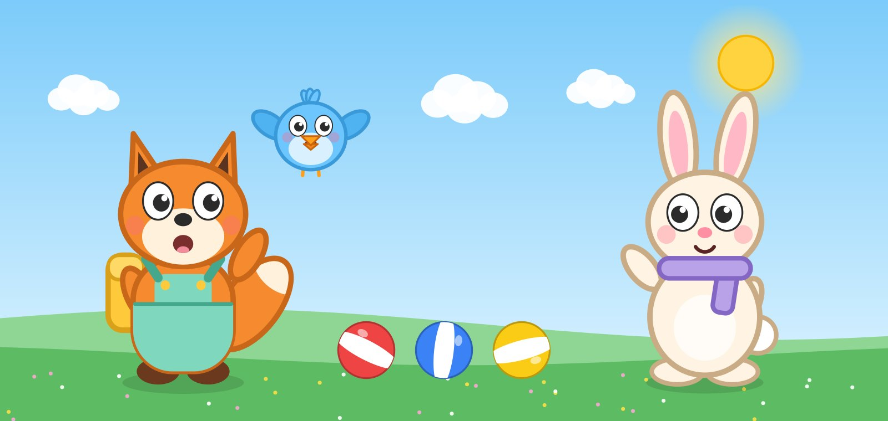

Poppydoo Town
Happy stories and learning for little ones
Original animated shows for children aged 2–5 and the grown-ups who watch with them — gentle stories about numbers, colours, shapes, letters, feelings and kind ways to play together.
Watch on YouTube
Our first show: Tiny Wonder Trails
Little Questions. Big Adventures! Three little friends follow small trails through their everyday world, and every adventure starts with a little question.
Finn the Fox
Curious and enthusiastic, with mint-green overalls and a yellow backpack. Finn starts every adventure: “Let's find out!”
Pip the Bird
A small, round sky-blue bird who notices clues first and always asks the viewer: “What do you think?”
Mimi the Bunny
Gentle and thoughtful, with a lavender scarf. Mimi loves colours, music and shapes: “We can learn together!”
What children learn
- Counting from 1 to 10
- Colours
- Shapes
- Letters A to Z
- Naming feelings and calming down
- Sharing, taking turns and helping
- Saying thank you
- Everyday routines like washing hands
How we make our episodes
Every episode is written with the help of AI writing tools, voiced with synthetic voices and animated with our own code, so our characters always look the same. A person reviews and approves every script and every finished video before it is published. Facts that children learn — counts, colour names, shapes and letters — are checked automatically before a script reaches review.
Our videos are made for children and are marked “made for kids” on YouTube. We never ask children to like, subscribe, comment or buy anything.
How we publish
Our internal publishing tool — shown as “Poppydoo Town” on Google's sign-in screen — uses YouTube API Services to upload our finished episodes to our own YouTube channel, set their titles, descriptions, thumbnails and “made for kids” setting, and check that each upload has finished. It is used only by the channel's owner and is not offered to the public.
Read how it handles data in our Privacy Policy and the rules for using it in our Terms of Service. By using the tool you agree to the YouTube Terms of Service; Google's handling of data is described in the Google Privacy Policy.